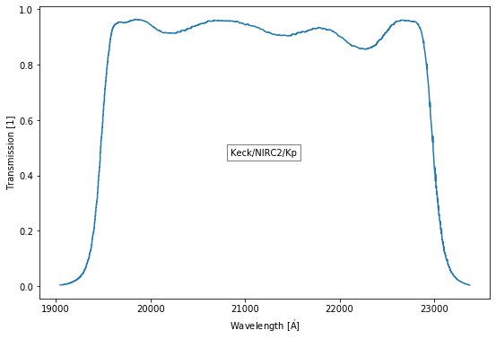

The notebook is available here: https://github.com/starkit/wsynphot/tree/master/docs/quickstart.ipynb
Quickstart¶
[1]:
import wsynphot
[py.warnings ][WARNING] /usr/share/miniconda/envs/starkit/lib/python3.6/site-packages/tqdm/autonotebook/__init__.py:18: TqdmExperimentalWarning: Using `tqdm.autonotebook.tqdm` in notebook mode. Use `tqdm.tqdm` instead to force console mode (e.g. in jupyter console)
" (e.g. in jupyter console)", TqdmExperimentalWarning)
(warnings.py:99)
Getting filter data ready to use¶
If you are using wsynphot for 1st time, YOU NEED TO DOWNLOAD THE FILTER DATA by using:
[2]:
# wsynphot.download_filter_data()
This will cache the filter data on your disk so that everytime you call any wsynphot function like list_filters() that requires data, the data will be accessed from cache.
Wsynphot will even remind you to update your cached filter data, when it becomes more than a month since the last update. If you want to update it at the moment, use:
[3]:
# wsynphot.update_filter_data()
Listing available filters¶
The filter index (all available filters with their properties) can be listed as:
[4]:
wsynphot.list_filters()
[py.warnings ][WARNING] /usr/share/miniconda/envs/starkit/lib/python3.6/site-packages/astropy/io/votable/tree.py:283: W06: /home/vsts/Downloads/wsynphot/filters/SVO/index.vot:15:3: W06: Invalid UCD 'instr.obsty': Secondary word 'instr.obsty' is not valid as a primary word
vo_warn(W06, (ucd, six.text_type(e)), config, pos)
(warnings.py:99)
[WARNING] [py.warnings ] /usr/share/miniconda/envs/starkit/lib/python3.6/site-packages/astropy/io/votable/tree.py:283: W06: /home/vsts/Downloads/wsynphot/filters/SVO/index.vot:15:3: W06: Invalid UCD 'instr.obsty': Secondary word 'instr.obsty' is not valid as a primary word
vo_warn(W06, (ucd, six.text_type(e)), config, pos)
(warnings.py:99)
[py.warnings ][WARNING] /usr/share/miniconda/envs/starkit/lib/python3.6/site-packages/astropy/io/votable/tree.py:283: W06: /home/vsts/Downloads/wsynphot/filters/SVO/index.vot:37:3: W06: Invalid UCD 'DATA_LINK': Unknown word 'DATA_LINK'
vo_warn(W06, (ucd, six.text_type(e)), config, pos)
(warnings.py:99)
[WARNING] [py.warnings ] /usr/share/miniconda/envs/starkit/lib/python3.6/site-packages/astropy/io/votable/tree.py:283: W06: /home/vsts/Downloads/wsynphot/filters/SVO/index.vot:37:3: W06: Invalid UCD 'DATA_LINK': Unknown word 'DATA_LINK'
vo_warn(W06, (ucd, six.text_type(e)), config, pos)
(warnings.py:99)
[4]:
| FilterProfileService | filterID | WavelengthUnit | WavelengthUCD | PhotSystem | DetectorType | Band | Instrument | Facility | ProfileReference | ... | WavelengthPhot | FWHM | PhotCalID | MagSys | ZeroPoint | ZeroPointUnit | Mag0 | ZeroPointType | AsinhSoft | TrasmissionCurve | |
|---|---|---|---|---|---|---|---|---|---|---|---|---|---|---|---|---|---|---|---|---|---|
| 0 | ivo://svo/fps | HST/STIS_FUV.F25LYA | Angstrom | em.wl | 1 | STIS | HST | https://stsynphot.readthedocs.io/en/latest/sts... | ... | 1.376536e+03 | 8.046415e+01 | HST/STIS_FUV.F25LYA/Vega | Vega | 59.921341 | Jy | 0.0 | 0.0 | http://svo2.cab.inta-csic.es//theory/fps/fps.p... | |||
| 1 | ivo://svo/fps | HST/STIS_FUV.F25LYA_G140L | Angstrom | em.wl | 1 | STIS | HST | https://stsynphot.readthedocs.io/en/latest/sts... | ... | 1.364339e+03 | 9.856856e+01 | HST/STIS_FUV.F25LYA_G140L/Vega | Vega | 63.976688 | Jy | 0.0 | 0.0 | http://svo2.cab.inta-csic.es//theory/fps/fps.p... | |||
| 2 | ivo://svo/fps | HST/STIS_FUV.F25LYA_G140M | Angstrom | em.wl | 1 | STIS | HST | https://stsynphot.readthedocs.io/en/latest/sts... | ... | 1.361286e+03 | 9.450593e+01 | HST/STIS_FUV.F25LYA_G140M/Vega | Vega | 62.946198 | Jy | 0.0 | 0.0 | http://svo2.cab.inta-csic.es//theory/fps/fps.p... | |||
| 3 | ivo://svo/fps | IUE/IUE.1250-1300 | Angstrom | em.wl | IUE | 0 | IUE | ... | 1.284802e+03 | 5.100000e+01 | IUE/IUE.1250-1300/Vega | Vega | 78.500328 | Jy | 0.0 | Pogson | 0.0 | http://svo2.cab.inta-csic.es//theory/fps/fps.p... | |||
| 4 | ivo://svo/fps | HST/ACS_SBC.F122M | Angstrom | em.wl | 1 | ACS | HST | https://stsynphot.readthedocs.io/en/latest/sts... | ... | 1.432717e+03 | 1.011414e+02 | HST/ACS_SBC.F122M/Vega | Vega | 119.552032 | Jy | 0.0 | 0.0 | http://svo2.cab.inta-csic.es//theory/fps/fps.p... | |||
| 5 | ivo://svo/fps | TD1/SPEC.F1360 | Angstrom | em.wl | TD1 | 0 | TD1 | TD1 | http://adsabs.harvard.edu/abs/1976A%26A....49.... | ... | 1.360629e+03 | 3.493550e+01 | TD1/SPEC.F1360/Vega | Vega | 305.763611 | Jy | 0.0 | Pogson | 0.0 | http://svo2.cab.inta-csic.es//theory/fps/fps.p... | |
| 6 | ivo://svo/fps | HST/STIS_FUV.25MAMA_G140M | Angstrom | em.wl | 1 | STIS | HST | https://stsynphot.readthedocs.io/en/latest/sts... | ... | 1.451699e+03 | 2.392322e+02 | HST/STIS_FUV.25MAMA_G140M/Vega | Vega | 263.913055 | Jy | 0.0 | 0.0 | http://svo2.cab.inta-csic.es//theory/fps/fps.p... | |||
| 7 | ivo://svo/fps | HST/STIS_FUV.F25ND3_G140M | Angstrom | em.wl | 1 | STIS | HST | https://stsynphot.readthedocs.io/en/latest/sts... | ... | 1.449844e+03 | 2.402186e+02 | HST/STIS_FUV.F25ND3_G140M/Vega | Vega | 269.066925 | Jy | 0.0 | 0.0 | http://svo2.cab.inta-csic.es//theory/fps/fps.p... | |||
| 8 | ivo://svo/fps | HST/STIS_FUV.25MAMA_G140L | Angstrom | em.wl | 1 | STIS | HST | https://stsynphot.readthedocs.io/en/latest/sts... | ... | 1.454146e+03 | 2.577850e+02 | HST/STIS_FUV.25MAMA_G140L/Vega | Vega | 271.152496 | Jy | 0.0 | 0.0 | http://svo2.cab.inta-csic.es//theory/fps/fps.p... | |||
| 9 | ivo://svo/fps | HST/STIS_FUV.F25ND3_G140L | Angstrom | em.wl | 1 | STIS | HST | https://stsynphot.readthedocs.io/en/latest/sts... | ... | 1.452543e+03 | 2.583499e+02 | HST/STIS_FUV.F25ND3_G140L/Vega | Vega | 276.551300 | Jy | 0.0 | 0.0 | http://svo2.cab.inta-csic.es//theory/fps/fps.p... | |||
| 10 | ivo://svo/fps | HST/STIS_FUV.F25ND5_G140M | Angstrom | em.wl | 1 | STIS | HST | https://stsynphot.readthedocs.io/en/latest/sts... | ... | 1.461439e+03 | 2.324531e+02 | HST/STIS_FUV.F25ND5_G140M/Vega | Vega | 276.351379 | Jy | 0.0 | 0.0 | http://svo2.cab.inta-csic.es//theory/fps/fps.p... | |||
| 11 | ivo://svo/fps | TD1/SPEC.F1380 | Angstrom | em.wl | TD1 | 0 | TD1 | TD1 | http://adsabs.harvard.edu/abs/1976A%26A....49.... | ... | 1.380699e+03 | 3.493550e+01 | TD1/SPEC.F1380/Vega | Vega | 333.016724 | Jy | 0.0 | Pogson | 0.0 | http://svo2.cab.inta-csic.es//theory/fps/fps.p... | |
| 12 | ivo://svo/fps | HST/STIS_FUV.F25ND5_G140L | Angstrom | em.wl | 1 | STIS | HST | https://stsynphot.readthedocs.io/en/latest/sts... | ... | 1.463900e+03 | 2.517317e+02 | HST/STIS_FUV.F25ND5_G140L/Vega | Vega | 284.244690 | Jy | 0.0 | 0.0 | http://svo2.cab.inta-csic.es//theory/fps/fps.p... | |||
| 13 | ivo://svo/fps | HST/STIS_FUV.F25NDQ2_G140M | Angstrom | em.wl | 1 | STIS | HST | https://stsynphot.readthedocs.io/en/latest/sts... | ... | 1.467325e+03 | 2.803337e+02 | HST/STIS_FUV.F25NDQ2_G140M/Vega | Vega | 301.360229 | Jy | 0.0 | 0.0 | http://svo2.cab.inta-csic.es//theory/fps/fps.p... | |||
| 14 | ivo://svo/fps | HST/STIS_FUV.25MAMA | Angstrom | em.wl | 1 | STIS | HST | https://stsynphot.readthedocs.io/en/latest/sts... | ... | 1.489032e+03 | 2.873541e+02 | HST/STIS_FUV.25MAMA/Vega | Vega | 294.259918 | Jy | 0.0 | 0.0 | http://svo2.cab.inta-csic.es//theory/fps/fps.p... | |||
| 15 | ivo://svo/fps | HST/STIS_FUV.F25ND3 | Angstrom | em.wl | 1 | STIS | HST | https://stsynphot.readthedocs.io/en/latest/sts... | ... | 1.483534e+03 | 2.949548e+02 | HST/STIS_FUV.F25ND3/Vega | Vega | 297.713226 | Jy | 0.0 | 0.0 | http://svo2.cab.inta-csic.es//theory/fps/fps.p... | |||
| 16 | ivo://svo/fps | HST/STIS_FUV.F25NDQ3_G140M | Angstrom | em.wl | 1 | STIS | HST | https://stsynphot.readthedocs.io/en/latest/sts... | ... | 1.469030e+03 | 3.032110e+02 | HST/STIS_FUV.F25NDQ3_G140M/Vega | Vega | 307.499847 | Jy | 0.0 | 0.0 | http://svo2.cab.inta-csic.es//theory/fps/fps.p... | |||
| 17 | ivo://svo/fps | HST/STIS_FUV.F25NDQ2_G140L | Angstrom | em.wl | 1 | STIS | HST | https://stsynphot.readthedocs.io/en/latest/sts... | ... | 1.469412e+03 | 3.071084e+02 | HST/STIS_FUV.F25NDQ2_G140L/Vega | Vega | 309.404938 | Jy | 0.0 | 0.0 | http://svo2.cab.inta-csic.es//theory/fps/fps.p... | |||
| 18 | ivo://svo/fps | HST/STIS_FUV.F25NDQ3_G140L | Angstrom | em.wl | 1 | STIS | HST | https://stsynphot.readthedocs.io/en/latest/sts... | ... | 1.471105e+03 | 3.276010e+02 | HST/STIS_FUV.F25NDQ3_G140L/Vega | Vega | 315.557678 | Jy | 0.0 | 0.0 | http://svo2.cab.inta-csic.es//theory/fps/fps.p... | |||
| 19 | ivo://svo/fps | TD1/TD1.140 | Angstrom | em.wl | TD1 | 0 | TD1 | TD1 | ... | 1.403559e+03 | 1.000010e+02 | TD1/TD1.140/Vega | Vega | 368.054199 | Jy | 0.0 | Pogson | 0.0 | http://svo2.cab.inta-csic.es//theory/fps/fps.p... | ||
| 20 | ivo://svo/fps | TD1/NARROW1.1400 | Angstrom | em.wl | TD1 | 0 | TD1 | TD1 | http://ulisse.pd.astro.it/Astro/ADPS/ADPS2/Fil... | ... | 1.403563e+03 | 1.000000e+02 | TD1/NARROW1.1400/Vega | Vega | 368.077026 | Jy | 0.0 | Pogson | 0.0 | http://svo2.cab.inta-csic.es//theory/fps/fps.p... | |
| 21 | ivo://svo/fps | TD1/SPEC.F1400 | Angstrom | em.wl | TD1 | 0 | TD1 | TD1 | http://adsabs.harvard.edu/abs/1976A%26A....49.... | ... | 1.400882e+03 | 3.493550e+01 | TD1/SPEC.F1400/Vega | Vega | 365.678650 | Jy | 0.0 | Pogson | 0.0 | http://svo2.cab.inta-csic.es//theory/fps/fps.p... | |
| 22 | ivo://svo/fps | HST/STIS_FUV.F25NDQ1_G140M | Angstrom | em.wl | 1 | STIS | HST | https://stsynphot.readthedocs.io/en/latest/sts... | ... | 1.470560e+03 | 2.866362e+02 | HST/STIS_FUV.F25NDQ1_G140M/Vega | Vega | 317.319885 | Jy | 0.0 | 0.0 | http://svo2.cab.inta-csic.es//theory/fps/fps.p... | |||
| 23 | ivo://svo/fps | HST/STIS_FUV.F25NDQ1_G140L | Angstrom | em.wl | 1 | STIS | HST | https://stsynphot.readthedocs.io/en/latest/sts... | ... | 1.472481e+03 | 3.029540e+02 | HST/STIS_FUV.F25NDQ1_G140L/Vega | Vega | 325.051025 | Jy | 0.0 | 0.0 | http://svo2.cab.inta-csic.es//theory/fps/fps.p... | |||
| 24 | ivo://svo/fps | HST/STIS_FUV.F25ND5 | Angstrom | em.wl | 1 | STIS | HST | https://stsynphot.readthedocs.io/en/latest/sts... | ... | 1.498128e+03 | 2.925464e+02 | HST/STIS_FUV.F25ND5/Vega | Vega | 309.317474 | Jy | 0.0 | 0.0 | http://svo2.cab.inta-csic.es//theory/fps/fps.p... | |||
| 25 | ivo://svo/fps | HST/STIS_FUV.F25NDQ4_G140M | Angstrom | em.wl | 1 | STIS | HST | https://stsynphot.readthedocs.io/en/latest/sts... | ... | 1.477624e+03 | 3.078364e+02 | HST/STIS_FUV.F25NDQ4_G140M/Vega | Vega | 341.076538 | Jy | 0.0 | 0.0 | http://svo2.cab.inta-csic.es//theory/fps/fps.p... | |||
| 26 | ivo://svo/fps | HST/STIS_FUV.F25NDQ4_G140L | Angstrom | em.wl | 1 | STIS | HST | https://stsynphot.readthedocs.io/en/latest/sts... | ... | 1.479140e+03 | 3.221737e+02 | HST/STIS_FUV.F25NDQ4_G140L/Vega | Vega | 348.640503 | Jy | 0.0 | 0.0 | http://svo2.cab.inta-csic.es//theory/fps/fps.p... | |||
| 27 | ivo://svo/fps | TD1/SPEC.F1420 | Angstrom | em.wl | TD1 | 0 | TD1 | TD1 | http://adsabs.harvard.edu/abs/1976A%26A....49.... | ... | 1.420684e+03 | 3.493550e+01 | TD1/SPEC.F1420/Vega | Vega | 404.690247 | Jy | 0.0 | Pogson | 0.0 | http://svo2.cab.inta-csic.es//theory/fps/fps.p... | |
| 28 | ivo://svo/fps | HST/STIS_FUV.F25NDQ2 | Angstrom | em.wl | 1 | STIS | HST | https://stsynphot.readthedocs.io/en/latest/sts... | ... | 1.506156e+03 | 3.592179e+02 | HST/STIS_FUV.F25NDQ2/Vega | Vega | 337.573486 | Jy | 0.0 | 0.0 | http://svo2.cab.inta-csic.es//theory/fps/fps.p... | |||
| 29 | ivo://svo/fps | HST/STIS_FUV.F25NDQ3 | Angstrom | em.wl | 1 | STIS | HST | https://stsynphot.readthedocs.io/en/latest/sts... | ... | 1.507273e+03 | 3.811847e+02 | HST/STIS_FUV.F25NDQ3/Vega | Vega | 343.337189 | Jy | 0.0 | 0.0 | http://svo2.cab.inta-csic.es//theory/fps/fps.p... | |||
| ... | ... | ... | ... | ... | ... | ... | ... | ... | ... | ... | ... | ... | ... | ... | ... | ... | ... | ... | ... | ... | ... |
| 4990 | ivo://svo/fps | Spitzer/MIPS.70mu | Angstrom | em.wl | MIPS | 0 | MIPS | Spitzer | http://ssc.spitzer.caltech.edu/mips/spectral_r... | ... | 6.936470e+05 | 1.898351e+05 | Spitzer/MIPS.70mu/Vega | Vega | 0.769955 | Jy | 0.0 | Pogson | 0.0 | http://svo2.cab.inta-csic.es//theory/fps/fps.p... | |
| 4991 | ivo://svo/fps | ISO/PHT-C.70mu | Angstrom | em.wl | ISO | 0 | PHT | ISO | http://general-tools.cosmos.esa.int/iso/manual... | ... | 7.455638e+05 | 2.163768e+05 | ISO/PHT-C.70mu/Vega | Vega | 0.636514 | Jy | 0.0 | Pogson | 0.0 | http://svo2.cab.inta-csic.es//theory/fps/fps.p... | |
| 4992 | ivo://svo/fps | AKARI/FIS.WIDE-S | Angstrom | em.wl | FIS | 0 | FIS | AKARI | http://www.ir.isas.jaxa.jp/AKARI/Observation/R... | ... | 8.036109e+05 | 2.707058e+05 | AKARI/FIS.WIDE-S/Vega | Vega | 0.515878 | Jy | 0.0 | Pogson | 0.0 | http://svo2.cab.inta-csic.es//theory/fps/fps.p... | |
| 4993 | ivo://svo/fps | SOFIA/HAWC.C | Angstrom | em.wl | 0 | HAWC | SOFIA | https://www.sofia.usra.edu/science/proposing-a... | ... | 8.835179e+05 | 1.704136e+05 | SOFIA/HAWC.C/Vega | Vega | 0.490535 | Jy | 0.0 | Pogson | 0.0 | http://svo2.cab.inta-csic.es//theory/fps/fps.p... | ||
| 4994 | ivo://svo/fps | ISO/PHT-C.90mu | Angstrom | em.wl | ISO | 0 | PHT | ISO | http://general-tools.cosmos.esa.int/iso/manual... | ... | 8.544859e+05 | 3.841473e+05 | ISO/PHT-C.90mu/Vega | Vega | 0.455685 | Jy | 0.0 | Pogson | 0.0 | http://svo2.cab.inta-csic.es//theory/fps/fps.p... | |
| 4995 | ivo://svo/fps | COBE/DIRBE.100m | Angstrom | em.wl | DIRBE | 0 | DIRBE | COBE | https://lambda.gsfc.nasa.gov/product/cobe/c_sp... | ... | 9.412082e+05 | 3.097860e+05 | COBE/DIRBE.100m/Vega | Vega | 0.406927 | Jy | 0.0 | Pogson | 0.0 | http://svo2.cab.inta-csic.es//theory/fps/fps.p... | |
| 4996 | ivo://svo/fps | IRAS/IRAS.100mu | Angstrom | em.wl | IRAS | 0 | IRAS | http://irsa.ipac.caltech.edu/IRASdocs/exp.sup/... | ... | 9.694183e+05 | 3.222499e+05 | IRAS/IRAS.100mu/Vega | Vega | 0.386524 | Jy | 0.0 | Pogson | 0.0 | http://svo2.cab.inta-csic.es//theory/fps/fps.p... | ||
| 4997 | ivo://svo/fps | ISO/PHT-P.100mu | Angstrom | em.wl | ISO | 0 | PHT | ISO | http://general-tools.cosmos.esa.int/iso/manual... | ... | 9.824935e+05 | 3.004847e+05 | ISO/PHT-P.100mu/Vega | Vega | 0.380426 | Jy | 0.0 | Pogson | 0.0 | http://svo2.cab.inta-csic.es//theory/fps/fps.p... | |
| 4998 | ivo://svo/fps | ISO/PHT-C.100mu | Angstrom | em.wl | ISO | 0 | PHT | ISO | http://general-tools.cosmos.esa.int/iso/manual... | ... | 9.678518e+05 | 3.355158e+05 | ISO/PHT-C.100mu/Vega | Vega | 0.383468 | Jy | 0.0 | Pogson | 0.0 | http://svo2.cab.inta-csic.es//theory/fps/fps.p... | |
| 4999 | ivo://svo/fps | Herschel/Pacs.green | Angstrom | em.wl | Herschel | 0 | Pacs | Herschel | https://nhscsci.ipac.caltech.edu/sc/index.php/... | ... | 9.901764e+05 | 3.568660e+05 | Herschel/Pacs.green/Vega | Vega | 0.378392 | Jy | 0.0 | Pogson | 0.0 | http://svo2.cab.inta-csic.es//theory/fps/fps.p... | |
| 5000 | ivo://svo/fps | ISO/PHT-C.105mu | Angstrom | em.wl | ISO | 0 | PHT | ISO | http://general-tools.cosmos.esa.int/iso/manual... | ... | 1.032345e+06 | 2.100148e+05 | ISO/PHT-C.105mu/Vega | Vega | 0.345418 | Jy | 0.0 | Pogson | 0.0 | http://svo2.cab.inta-csic.es//theory/fps/fps.p... | |
| 5001 | ivo://svo/fps | ISO/PHT-C.120mu | Angstrom | em.wl | ISO | 0 | PHT | ISO | http://general-tools.cosmos.esa.int/iso/manual... | ... | 1.124067e+06 | 2.165200e+05 | ISO/PHT-C.120mu/Vega | Vega | 0.283105 | Jy | 0.0 | Pogson | 0.0 | http://svo2.cab.inta-csic.es//theory/fps/fps.p... | |
| 5002 | ivo://svo/fps | AKARI/FIS.WIDE-L | Angstrom | em.wl | FIS | 0 | FIS | AKARI | http://www.ir.isas.jaxa.jp/AKARI/Observation/R... | ... | 1.429926e+06 | 3.894922e+05 | AKARI/FIS.WIDE-L/Vega | Vega | 0.176714 | Jy | 0.0 | Pogson | 0.0 | http://svo2.cab.inta-csic.es//theory/fps/fps.p... | |
| 5003 | ivo://svo/fps | COBE/DIRBE.140m | Angstrom | em.wl | DIRBE | 0 | DIRBE | COBE | https://lambda.gsfc.nasa.gov/product/cobe/c_sp... | ... | 1.420013e+06 | 3.514022e+05 | COBE/DIRBE.140m/Vega | Vega | 0.176088 | Jy | 0.0 | Pogson | 0.0 | http://svo2.cab.inta-csic.es//theory/fps/fps.p... | |
| 5004 | ivo://svo/fps | ISO/PHT-C.135mu | Angstrom | em.wl | ISO | 0 | PHT | ISO | http://general-tools.cosmos.esa.int/iso/manual... | ... | 1.453382e+06 | 4.405572e+05 | ISO/PHT-C.135mu/Vega | Vega | 0.167201 | Jy | 0.0 | Pogson | 0.0 | http://svo2.cab.inta-csic.es//theory/fps/fps.p... | |
| 5005 | ivo://svo/fps | SOFIA/HAWC.D | Angstrom | em.wl | 0 | HAWC | SOFIA | https://www.sofia.usra.edu/science/proposing-a... | ... | 1.536151e+06 | 3.394504e+05 | SOFIA/HAWC.D/Vega | Vega | 0.158686 | Jy | 0.0 | Pogson | 0.0 | http://svo2.cab.inta-csic.es//theory/fps/fps.p... | ||
| 5006 | ivo://svo/fps | Spitzer/MIPS.160mu | Angstrom | em.wl | MIPS | 0 | MIPS | Spitzer | http://ssc.spitzer.caltech.edu/mips/spectral_r... | ... | 1.536888e+06 | 3.454720e+05 | Spitzer/MIPS.160mu/Vega | Vega | 0.157904 | Jy | 0.0 | Pogson | 0.0 | http://svo2.cab.inta-csic.es//theory/fps/fps.p... | |
| 5007 | ivo://svo/fps | AKARI/FIS.N160 | Angstrom | em.wl | FIS | 0 | FIS | AKARI | http://www.ir.isas.jaxa.jp/AKARI/Observation/R... | ... | 1.603095e+06 | 3.327812e+05 | AKARI/FIS.N160/Vega | Vega | 0.145898 | Jy | 0.0 | Pogson | 0.0 | http://svo2.cab.inta-csic.es//theory/fps/fps.p... | |
| 5008 | ivo://svo/fps | Herschel/Pacs.red | Angstrom | em.wl | Herschel | 0 | Pacs | Herschel | https://nhscsci.ipac.caltech.edu/sc/index.php/... | ... | 1.569063e+06 | 7.495406e+05 | Herschel/Pacs.red/Vega | Vega | 0.143548 | Jy | 0.0 | Pogson | 0.0 | http://svo2.cab.inta-csic.es//theory/fps/fps.p... | |
| 5009 | ivo://svo/fps | ISO/PHT-C.160mu | Angstrom | em.wl | ISO | 0 | PHT | ISO | http://general-tools.cosmos.esa.int/iso/manual... | ... | 1.597013e+06 | 5.584378e+05 | ISO/PHT-C.160mu/Vega | Vega | 0.134895 | Jy | 0.0 | Pogson | 0.0 | http://svo2.cab.inta-csic.es//theory/fps/fps.p... | |
| 5010 | ivo://svo/fps | ISO/PHT-C.180mu | Angstrom | em.wl | ISO | 0 | PHT | ISO | http://general-tools.cosmos.esa.int/iso/manual... | ... | 1.742852e+06 | 4.259885e+05 | ISO/PHT-C.180mu/Vega | Vega | 0.119502 | Jy | 0.0 | Pogson | 0.0 | http://svo2.cab.inta-csic.es//theory/fps/fps.p... | |
| 5011 | ivo://svo/fps | ISO/PHT-C.200mu | Angstrom | em.wl | ISO | 0 | PHT | ISO | http://general-tools.cosmos.esa.int/iso/manual... | ... | 1.979992e+06 | 2.962398e+05 | ISO/PHT-C.200mu/Vega | Vega | 0.094259 | Jy | 0.0 | Pogson | 0.0 | http://svo2.cab.inta-csic.es//theory/fps/fps.p... | |
| 5012 | ivo://svo/fps | SOFIA/HAWC.E | Angstrom | em.wl | 0 | HAWC | SOFIA | https://www.sofia.usra.edu/science/proposing-a... | ... | 2.123903e+06 | 4.403009e+05 | SOFIA/HAWC.E/Vega | Vega | 0.082318 | Jy | 0.0 | Pogson | 0.0 | http://svo2.cab.inta-csic.es//theory/fps/fps.p... | ||
| 5013 | ivo://svo/fps | Herschel/SPIRE.PSW | Angstrom | em.wl | SPIRE | 0 | SPIRE | Herschel | http://herschel.esac.esa.int/Docs/SPIRE/html/s... | ... | 2.449650e+06 | 7.770002e+05 | Herschel/SPIRE.PSW/Vega | Vega | 0.060750 | Jy | 0.0 | Pogson | 0.0 | http://svo2.cab.inta-csic.es//theory/fps/fps.p... | |
| 5014 | ivo://svo/fps | COBE/DIRBE.240m | Angstrom | em.wl | DIRBE | 0 | DIRBE | COBE | https://lambda.gsfc.nasa.gov/product/cobe/c_sp... | ... | 2.353122e+06 | 1.008312e+06 | COBE/DIRBE.240m/Vega | Vega | 0.061681 | Jy | 0.0 | Pogson | 0.0 | http://svo2.cab.inta-csic.es//theory/fps/fps.p... | |
| 5015 | ivo://svo/fps | Herschel/SPIRE.PSW_ext | Angstrom | em.wl | SPIRE | 0 | SPIRE | Herschel | http://herschel.esac.esa.int/Docs/SPIRE/html/s... | ... | 2.492830e+06 | 6.589304e+05 | Herschel/SPIRE.PSW_ext/Vega | Vega | 0.058680 | Jy | 0.0 | Pogson | 0.0 | http://svo2.cab.inta-csic.es//theory/fps/fps.p... | |
| 5016 | ivo://svo/fps | Herschel/SPIRE.PMW | Angstrom | em.wl | SPIRE | 0 | SPIRE | Herschel | http://herschel.esac.esa.int/Docs/SPIRE/html/s... | ... | 3.437871e+06 | 1.059688e+06 | Herschel/SPIRE.PMW/Vega | Vega | 0.030295 | Jy | 0.0 | Pogson | 0.0 | http://svo2.cab.inta-csic.es//theory/fps/fps.p... | |
| 5017 | ivo://svo/fps | Herschel/SPIRE.PMW_ext | Angstrom | em.wl | SPIRE | 0 | SPIRE | Herschel | http://herschel.esac.esa.int/Docs/SPIRE/html/s... | ... | 3.496571e+06 | 9.371992e+05 | Herschel/SPIRE.PMW_ext/Vega | Vega | 0.029263 | Jy | 0.0 | Pogson | 0.0 | http://svo2.cab.inta-csic.es//theory/fps/fps.p... | |
| 5018 | ivo://svo/fps | Herschel/SPIRE.PLW | Angstrom | em.wl | SPIRE | 0 | SPIRE | Herschel | http://herschel.esac.esa.int/Docs/SPIRE/html/s... | ... | 4.890142e+06 | 1.998631e+06 | Herschel/SPIRE.PLW/Vega | Vega | 0.014141 | Jy | 0.0 | Pogson | 0.0 | http://svo2.cab.inta-csic.es//theory/fps/fps.p... | |
| 5019 | ivo://svo/fps | Herschel/SPIRE.PLW_ext | Angstrom | em.wl | SPIRE | 0 | SPIRE | Herschel | http://herschel.esac.esa.int/Docs/SPIRE/html/s... | ... | 5.034501e+06 | 1.848042e+06 | Herschel/SPIRE.PLW_ext/Vega | Vega | 0.013288 | Jy | 0.0 | Pogson | 0.0 | http://svo2.cab.inta-csic.es//theory/fps/fps.p... |
5020 rows × 31 columns
Filter Curve¶
Create a filter curve object:
[5]:
filter = wsynphot.FilterCurve.load_filter('Keck/NIRC2/Kp')
filter
[5]:
FilterCurve <Keck/NIRC2/Kp>
Plot the curve by plot() method:
[6]:
%matplotlib inline
import matplotlib.pyplot as plt
plt.rcParams["figure.figsize"] = (9,6)
filter.plot(plt.gca())

Do any required calculations on the filter curve object:
[7]:
filter.zp_vega_f_lambda
[7]:
$4.6028628 \times 10^{-11} \; \mathrm{\frac{erg}{\mathring{A}\,s\,cm^{2}}}$
[8]:
filter.convert_vega_magnitude_to_f_lambda(0)
[8]:
$4.6028628 \times 10^{-11} \; \mathrm{\frac{erg}{\mathring{A}\,s\,cm^{2}}}$
[9]:
filter.convert_vega_magnitude_to_f_lambda(14.5)
[9]:
$7.2950459 \times 10^{-17} \; \mathrm{\frac{erg}{\mathring{A}\,s\,cm^{2}}}$
[ ]: